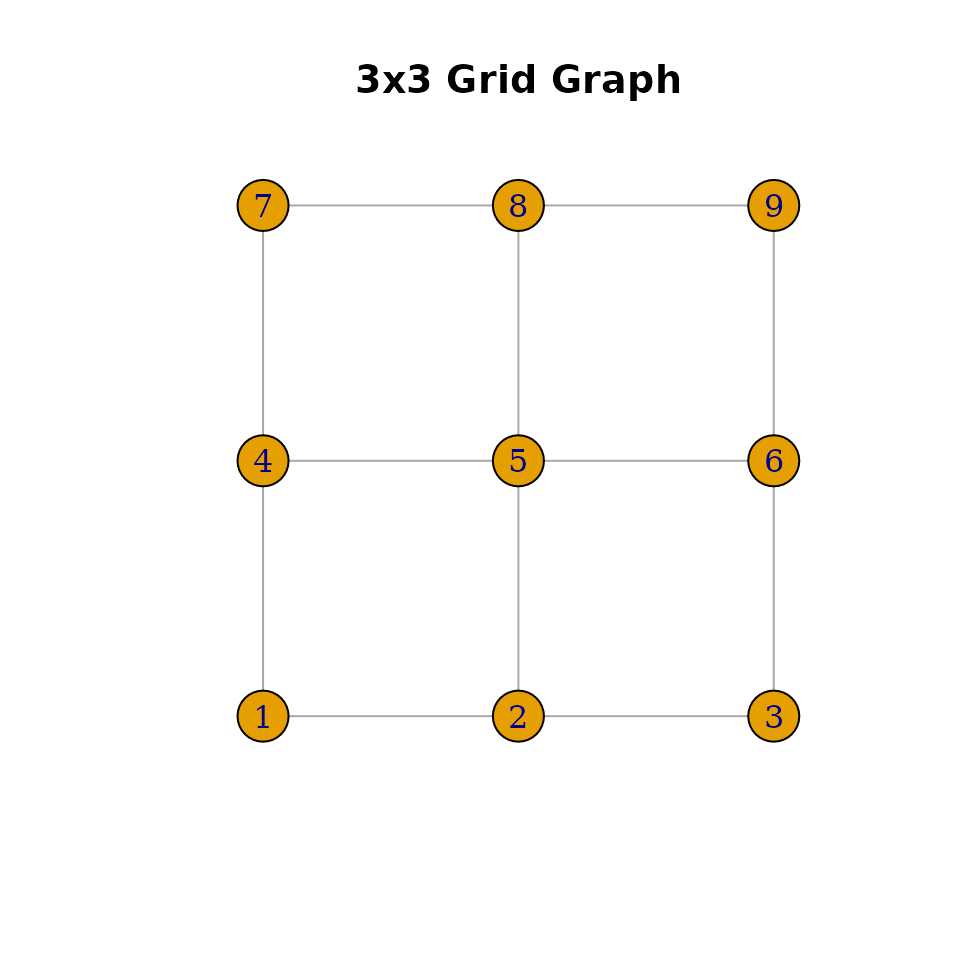

Overview
The NaturalUndirectedGraph is the foundational graph
object in mdgm. It stores an undirected graph in compressed sparse row
(CSR) format and provides methods for querying structure and sampling
spanning trees. Three constructor functions create graphs from different
representations.
Creating graphs
From an edge list
Edge lists are matrices (or data frames) with two or three columns. The first two columns are 1-indexed vertex pairs. Each undirected edge must appear twice (once per direction). An optional third column gives edge weights.
From an adjacency list
An adjacency list is a list where the i-th element is an integer vector of vertex i’s neighbors.
# 4-vertex star: vertex 1 connected to 2, 3, 4
adj <- list(
c(2L, 3L, 4L),
1L,
1L,
1L
)
g <- nug_from_adj_list(adj)
g$nvertices()
#> [1] 4
g$nedges()
#> [1] 3From an adjacency matrix
A symmetric matrix where nonzero entries indicate edges. The entry values are used as edge weights.
# 3x3 grid (rook adjacency)
n <- 9
A <- matrix(0, n, n)
for (i in 1:n) {
row_i <- (i - 1) %/% 3 + 1
col_i <- (i - 1) %% 3 + 1
for (j in 1:n) {
row_j <- (j - 1) %/% 3 + 1
col_j <- (j - 1) %% 3 + 1
if (abs(row_i - row_j) + abs(col_i - col_j) == 1) {
A[i, j] <- 1
}
}
}
g <- nug_from_adj_mat(A, seed = 123L)
g$nvertices()
#> [1] 9
g$nedges()
#> [1] 12Querying graph structure
g$nvertices()
#> [1] 9
g$nedges()
#> [1] 12
# Neighbors of vertex 5 (center of 3x3 grid) — should be 2, 4, 6, 8
sort(g$neighbors(5))
#> [1] 2 4 6 8Sampling spanning trees
Spanning trees are sampled uniformly (or with edge weights) using Wilson’s algorithm, Aldous-Broder, or the fast-forward hybrid method.
# Sample with Wilson's algorithm (default)
tree <- g$sample_spanning_tree("wilson")Available methods:
-
"wilson"— Wilson’s algorithm using loop-erased random walks. Efficient for most graphs. -
"aldous_broder"— Aldous-Broder algorithm using a simple random walk. Simpler but slower for large graphs. -
"fast_forward"— Hybrid method that switches between random walk and loop-erased walk.
Visualization with igraph
If the igraph package is installed, you can convert and plot the graph.
library(igraph)
#>
#> Attaching package: 'igraph'
#> The following objects are masked from 'package:stats':
#>
#> decompose, spectrum
#> The following object is masked from 'package:base':
#>
#> union
# Convert adjacency matrix to igraph
ig <- graph_from_adjacency_matrix(A, mode = "undirected")
# Layout as grid
coords <- cbind((1:n - 1) %% 3, (1:n - 1) %/% 3)
plot(ig, layout = coords, vertex.size = 20, vertex.label = 1:n,
main = "3x3 Grid Graph")